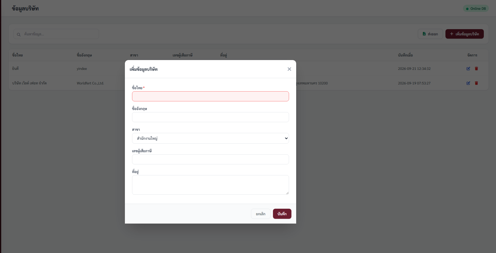
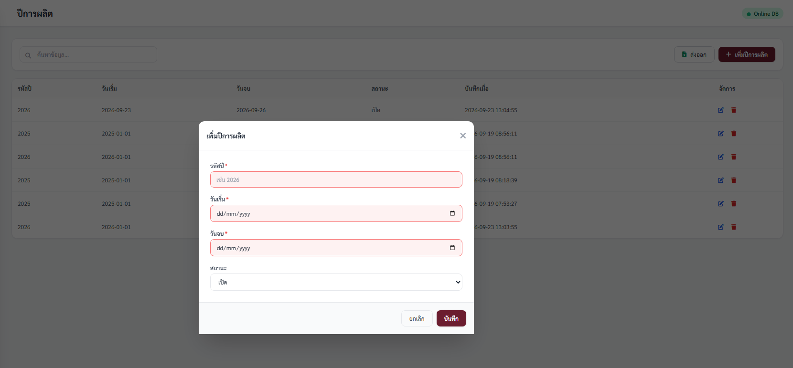
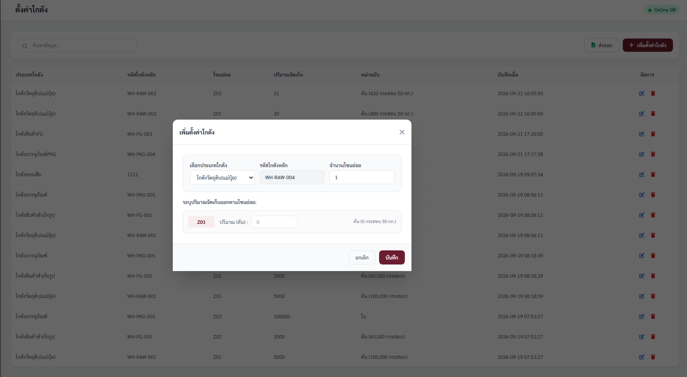
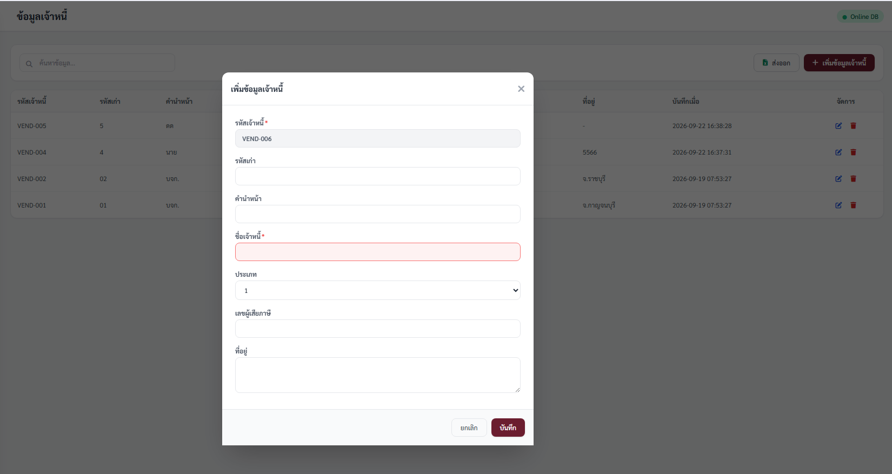
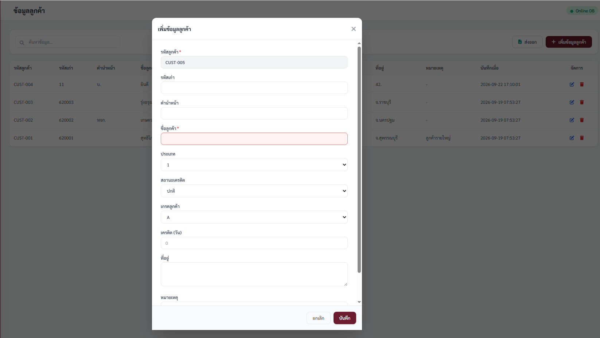
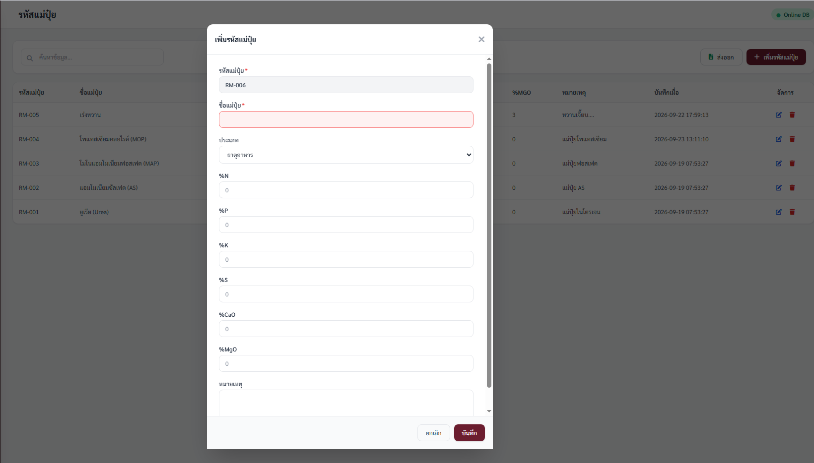
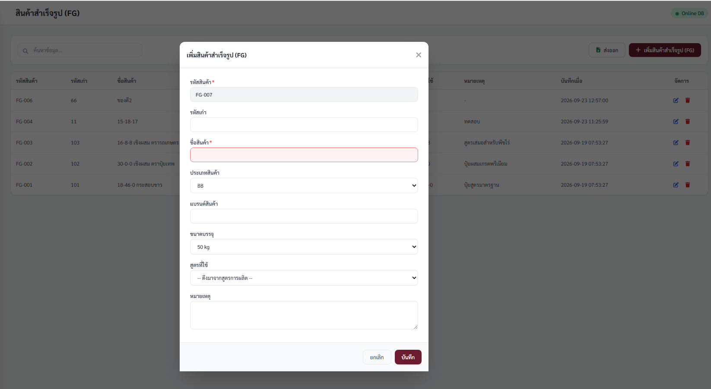
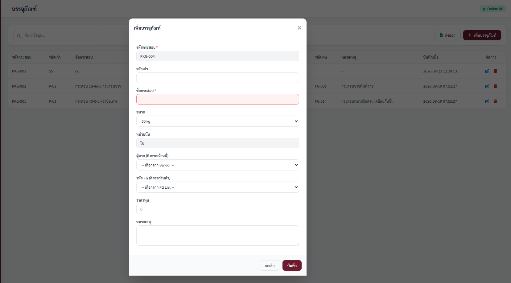
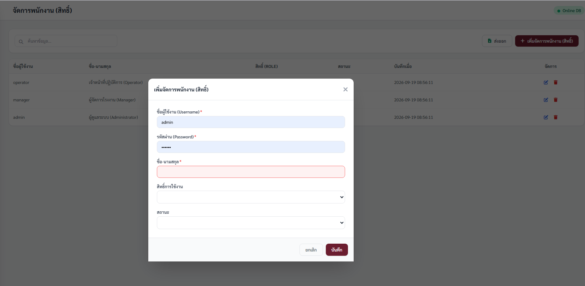

วิธีใช้ไฟล์นี้: กด พิมพ์ → Save as PDF = ได้ไฟล์ PDF | เปิดไฟล์นี้ใน Word → File → Open → เลือก .html → Save as DOCX = ได้ไฟล์ Word | หรือดูในระบบเมนู คู่มือการใช้งาน ด้านล่างสุด
admin / 123456 (role: admin)ดูยอดรวม 4 กล่องบน: เจ้าหนี้/ลูกค้า/แม่ปุ๋ย/FG (counts) + การ์ดต้อนรับ บริษัท เวิลด์ เฟอท จำกัด | Online DB สีเขียว = เชื่อมต่อสำเร็จ
เมนู ตั้งค่า / Master Data (fa-gear) พับไว้ตอนเปิดมา กดค่อยกาง มี 9 รายการ + รายงานทั้งหมด | เตรียมเพิ่ม BOM/Stock และกรองตาม Role
| หน้า | ฟิลด์บังคับ * |
|---|---|
| บริษัท | ชื่อไทย |
| ปีการผลิต | รหัสปี, วันเริ่ม, วันจบ |
| เจ้าหนี้ | รหัสเจ้าหนี้, ชื่อเจ้าหนี้ |
| ลูกค้า | รหัสลูกค้า, ชื่อลูกค้า |
| แม่ปุ๋ย | รหัสแม่ปุ๋ย, ชื่อแม่ปุ๋ย |
| FG | รหัสสินค้า, ชื่อสินค้า |
| บรรจุภัณฑ์ | รหัสกระสอบ, ชื่อกระสอบ |
| พนักงาน | Username, Password, ชื่อ-นามสกุล |
ฟิลด์: ชื่อไทย* / ชื่ออังกฤษ / สาขา (สำนักงานใหญ่/สาขา 2/3 ดีฟอลต์ สำนักงานใหญ่) / เลขผู้เสียภาษี / ที่อยู่

ฟิลด์: รหัสปี* (เช่น 2026) / วันเริ่ม* / วันจบ* / สถานะ (เปิด/ปิด ดีฟอลต์ เปิด)


ฟิลด์: รหัสเจ้าหนี้* (VEND-*** รันต่อ), รหัสเก่า, คำนำหน้า, ชื่อเจ้าหนี้*, ประเภท (1/2 ดีฟอลต์ 1), เลขผู้เสียภาษี, ที่อยู่

ฟิลด์: รหัสลูกค้า* (CUST-***), รหัสเก่า, คำนำหน้า, ชื่อลูกค้า*, ประเภท (1/2), สถานะเครดิต (ปกติ/ค้าง), เกรด (A/B/C/D), เครดิต(วัน) placeholder 0, ที่อยู่, หมายเหตุ

ฟิลด์: รหัสแม่ปุ๋ย* (RM-***), ชื่อแม่ปุ๋ย*, ประเภท (ธาตุอาหาร/FILLER ดีฟอลต์ ธาตุอาหาร), %N/P/K/S/CaO/MgO placeholder 0, หมายเหตุ

ฟิลด์: รหัสสินค้า* (FG-***), รหัสเก่า, ชื่อสินค้า*, ประเภท (BB/HP/CP ดีฟอลต์ BB), แบรนด์, ขนาด (50kg/1,000kg/1,200kg ดีฟอลต์ 50kg), สูตรที่ใช้ (dropdown ว่าง -- ดึงมาจากสูตรการผลิต --), หมายเหตุ

ฟิลด์: รหัสกระสอบ* (PKG-***), รหัสเก่า, ชื่อกระสอบ*, ขนาด (50kg... ดีฟอลต์ 50kg), หน่วยนับ (ใบ readonly), ผู้ขาย (ดึงจากเจ้าหนี้), รหัส FG (ดึงจากสินค้า), ราคาทุน placeholder 0, หมายเหตุ

ฟิลด์: Username* / Password* / ชื่อ-นามสกุล* / สิทธิ์ (admin/manager/operator/viewer) / สถานะ (ใช้งาน/ระงับ)

เมนู รายงานทั้งหมด โชว์การ์ด 9 ตาราง + จำนวน + ปุ่ม ดูข้อมูล | ลบ → Modal แดง | สำเร็จ → Toast เขียวกลางบน 2.5วิ | ผิดพลาด → Toast แดง
Version 1.0 | รองรับ Mobile / Tablet / Desktop | สอบถาม: admin / 123456 | Schema: supabase_schema.sql | App: src/App.vue
รูปฟอร์มจริงจาก docs/screenshots/*.png | เปิดใน Word → Save as DOCX = Word